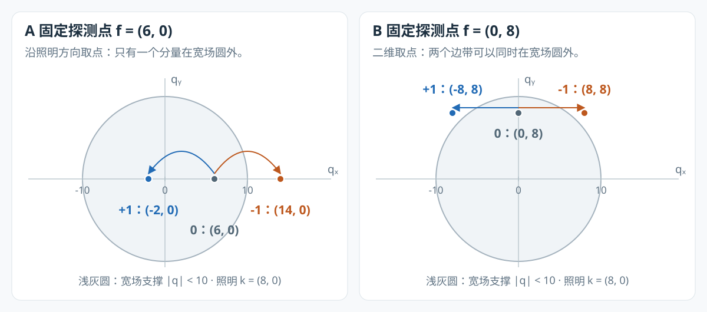
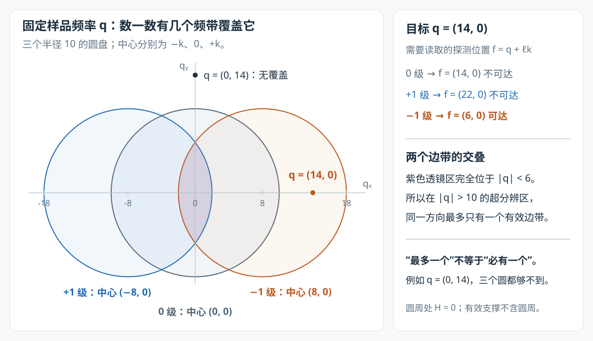

一个频谱点的 0、−1、+1 级，到底谁提供超分辨？
你说的“只有一个具备超分辨能力”，在常见的单方向、沿照明波矢取点的例子里是对的。但要先分清：你固定的是搬移前的探测频率，还是搬移后的样品频率。
- 固定探测频率 ：分离出的 0、±1 级对应三个不同的样品频率。哪些是新增高频，要分别检查它们搬回后是否超出宽场截止；二维情况下，可能有 0、1 或 2 个。
- 固定样品频率 ：在单方向、理想圆形 OTF 支撑的模型中，一个被覆盖的超分辨频率，确实只有一个边带能提供；多方向时可能有多个来源。
本篇先沿一个具体频率走完“照明混频 → 相机记录 → 相位分离 → 频谱归位”，再解释 fairSIM 为什么把搬移后的频带融合起来。
配套：全流程图谱的步骤 04–08 · fairSIM 实现与数值对照。
1. 先用一个点把问题说透
这里的“点”是二维频谱中的一个复数系数，不是图像里的一个空间像素，也不是一颗荧光分子。 的幅度与相位描述样品中相应空间频率的结构。
设检测截止半径 ，照明波矢 ；单位是图谱里的 DFT 频率格。暂时只看水平方向，省略为零的第二个坐标。
对于探测频率 ，相机在第 个照明相位记录的是
也就是说，同一个探测位置混着三个不同样品频率的信息。它们并不是同一份 的三个副本。[S1、S2]
| 分离分量 | 在原始帧中的相位标签 | 搬回的样品频率 | 是否超出宽场截止 ？ |
|---|---|---|---|
| 0 级 | 否 | ||
| +1 级 | 否 | ||
| −1 级 | 是 |
在这个例子里，你的判断完全成立：只有 −1 级携带的 提供了超出宽场通带的信息。 另外两个分量仍然有用，只是它们没有增加这个例子中的最高可达频率。
这里按“照明指数中的正负号”命名 ±1 级。因此本篇统一使用
+1 级归位到 ，−1 级归位到 。交换照明波矢的正方向，就会交换两个边带的名字；“哪一个符号更有超分辨能力”不是物理不变量。这个约定与本地图谱的 probe() 一致。[S2、S3]
2. 超分辨发生在哪一步：先把高频录进去，再把地址还原
2.1 均匀照明为什么录不到 ？
均匀照明时，成像关系是
因为 ，所以 。这个样品频率没有进入数据，之后单靠数值去卷积无法恢复它。
2.2 条纹照明把它变成了相机能记录的频率
采用负指数傅里叶变换，照明与成像模型为
照明平均强度已归一化；这里先忽略噪声与背景，，相位和波矢已知。将余弦展开，再用“空间相乘对应频域卷积”，得到
这正是第 1 节公式的来源，也对应 fairSIM 分离矩阵中的三列。[S2]
沿着 这一项看：样品频率 14 与照明频率 −8 混频，生成探测频率 。它经历的检测衰减是 ，而非 。本地模型给出 ，因此它终于进入了相机数据。[S3]
SIM 获得新增信息的关键，是采集前的光学混频；软件搬移负责恢复这份信息的正确频率坐标。 单纯把一张普通宽场图的频谱向外挪，不会得到相同的超分辨信息。
2.3 为什么要拍三相位，不能直接把 搬到 14？
因为 同时含 。直接搬移会把三者一起错放。三相位利用不同的相位标签把它们分开。
令 ，，并记
由 ，可得
相位标签不同的项抵消，目标项保留。fairSIM 把 放进矩阵并求逆，所以分离结果已经补偿了调制度；OTF 衰减仍在。[S2]
对 −1 级，我们得到 。再将整个分离频带按对应位移归位：
于是 。归位后，频谱和对应的 OTF 必须一起平移，不能又拿原点居中的 去判断这份信息。
3. 为什么不能推广成“每个探测点都只有一个超分辨分量”？
3.1 同一个探测点，可能带回零个、一个或两个高频
判据始终是：搬回后的样品频率是否在宽场圆盘外。固定一个有效探测频率 后，逐项计算即可：
| 固定的探测频率 | 0 级的 | +1 级的 | −1 级的 | 超出截止半径 10 的分量数 |
|---|---|---|---|---|
| 0 | ||||
| 1 | ||||
| 2 |
第三行中，两个边带都满足
它们提供的是两个不同的高频系数，不是对同一个高频系数重复测量。

图中画的是搬回后的样品频率坐标。浅灰圆为原点居中的宽场通带；箭头表示同一探测频率分离出的边带归位到哪里。所有坐标由 计算。
两边带同时在宽场外的条件也可直接推出：
在 的通常情形下，沿 的一维截线上不会同时满足，但二维频谱里可以，例如上面的垂直取点。这是只看水平截线时容易漏掉的情况。
3.2 两个边带作为整体，都能扩展频谱
+1 级将通带中心移到 ，−1 级移到 。它们分别扩展两侧的频率支撑；每个边带又都有一部分落在原宽场通带内。因此，“边带”不等于“整个频带都是新增高频”，也不能据第 1 节的例子断言另一个边带在整张图上都没有高频价值。
对实值样品，。第 1 节中 的共轭伙伴 ，由探测点 的 +1 级带回。两侧共同构成实值图像中的细条纹。理论上可利用共轭关系由半谱补齐另一半；fairSIM 仍显式处理两边，不能把它们理解成同一坐标上的两次独立采集。
0 级则覆盖整个原始低频圆盘，不只是 这一个直流点。它不扩展宽场截止，但为整体结构、强度和与边带重叠的频率提供数据。把它称为“没用”或“白给”会误导后续重建理解。
4. 搬移完成后：固定同一个样品频率，究竟有几路来源？
现在换一个问题：已经指定最终频谱里的 ，哪些分离分量能提供 ？
从前面的式子反解，每一级需要读取的探测位置是
这三个探测位置通常不同。只有 的通路才有效。
以目标 为例：
| 想通过哪一级恢复 ？ | 必须读取的探测频率 | 检测系统能否记录？ |
|---|---|---|
| 0 级 | 否， | |
| +1 级 | 否， | |
| −1 级 | 能， |
在这里，“只有一个边带提供这个超分辨频率”是正确的。 它问的是同一个输出地址有几路来源，与第 3 节“同一个输入地址装着几个不同高频”不同。
4.1 为什么单方向下不可能有两个边带同时覆盖同一个超分辨频率？
在理想圆形检测支撑中，定义有效频带
三个圆盘中心分别为 ，半径均为 。用严格小于号，是因为理想非相干 OTF 在截止边界上已经为零。
若两个边带都覆盖同一个 ，则
相加并使用平行四边形恒等式：
在本例中即 ，完全位于宽场圆盘内部。故两个边带不可能在 处重叠；0 级在那里同样为零。

两边带相互重叠的区域位于中央。 只有 −1 级覆盖； 则没有任何一级覆盖。圆周是支撑的极限边界，边界处的 OTF 为零。
所以准确结论是：单方向的一个超分辨频率，最多有一个边带覆盖；只有加上“位于该方向可恢复支撑内”，才能说恰好一个。 例如 虽然也是高频，却不在当前方向的任何圆盘里。
4.2 三方向时，同一高频可以有多路来源
照明波矢变为 后，考虑 ，其长度约为 ：
前两个方向的 −1 级都能提供同一个 。本地模型对应的 OTF 分别约为 0.2522、0.2764。[S3]
多方向既扩展不同方位的覆盖，也可以增加高频区的多路观测。三方向支撑是多个移位圆盘的并集，通常仍有方向差异，不能直接说成“变成一个完整圆盘”；不同观测的噪声是否独立还取决于采集与分离过程。
5. fairSIM 真正融合的是什么？
fairSIM 先把各频带放到共同的样品频率坐标，再在同一个 上累加。它不会把 当成对同一个样品频率的三次测量直接平均。
以下核对的是本地 fairSIM 提交 711afd12cb8c4fd4207bbca7ee7610c5aed4f732 的二维 Wiener 路径，otfBeforeShift=false，关闭 OTF attenuation 和 RL。不是对所有 fairSIM 版本及配置的统一断言。[S2]
5.1 与源码逐步对上
| 过程 | fairSIM 操作 | 对应含义 |
|---|---|---|
| 相位分离 | BandSeparation.separateBands |
求逆得到 ；同时补偿 |
| 扩大计算网格 | SimUtils.placeFreq |
将频谱放入两倍边长的网格，给外移频带留出坐标；填零本身不产生信息 |
| 归位 | SimUtils.fourierShift |
正负分量分别搬移，得到 |
| OTF 匹配 | OtfProvider.applyOtf |
在归位坐标乘对应的共轭 |
| 累加 | fullResult.add(shifted[i]) |
对各方向、各分量累加，形成同一输出网格上的分子 |
| 正则化与切趾 | getDenominator(w)、writeApoVector |
乘正则化分母的倒数，再乘切趾窗，最后逆 FFT |
fairSIM 中还要区分频带参数 b 和分离分量编号：二维三相位情形 nrBand=2，表示零级与一级谐波；分离分量有三个，按本篇约定为 separate[0] → 0、separate[1] → +1、separate[2] → −1。代码里的 pos=2、neg=1 描述搬移方向，不能直接当作照明相位指数的正负号。[S2]
5.2 先理解标准的融合式，再看源码的计数
归位后，每一路均有
如果采用等权二次误差与二次正则化，在每个 上求
对 求导并令其为零，得到标准形式
这解释了“乘共轭 OTF、累加、除以 OTF 平方和加正则项”的逻辑。无噪声且参数匹配时，分子的每一项都是 ，不会把同一结构无条件叠亮。
但当前 fairSIM 代码的实际分母有一个必须保留的细节：零级计数两次。 WienerFilter.addWienerDenominator 每个 b 都累加正、负两个位置的 OTF 平方；b=0 时两个位置相同，分子却只累加一次零级。因此当前图谱严格对应
这里 是切趾窗。原文直接把标准分母当作本版本的实际分母，并不准确。此差别影响宽场内的幅度；在超分辨区，，零级重复计数不影响那里。[S2、S3]
此外，分离时除以 会改变边带噪声，等相位或不同相位也影响噪声协方差。该源码路径没有再显式使用逐频带噪声方差权重，不能仅凭它叫 Wiener 就称为“严格的最小均方误差最优融合”。
5.3 回到 ：三个分量都加，为什么仍只有一个起作用？
单方向时，，，只有 。所以切趾前自动简化为
无效通路在乘共轭 OTF 的分子和 OTF 平方分母中都为零。因此 fairSIM 可以用同一个逐点公式处理：低频重叠区的多路融合、单方向高频区的一路恢复，以及无覆盖区的零输出。
同理，在三方向的 ，公式保留两条有效通路，融合的是它们对同一个 的观测。 这才是“频带重叠”和“同一点融合”的准确含义。
6. 有高频通路，还不等于实际图像一定分辨得出来
频带几何只回答“数据能从哪条路来”。结构是否实际存在、调制度、光子数、相位和波矢误差，以及正则化和切趾，都影响最后能否可靠辨认。
在仅有一路的频率上，写 ，切趾前有
取 、，对应 。本地 OTF 为 ：
| 条件 | 信号传递（切趾前） | 分离后噪声的振幅增益 |
|---|---|---|
| 约 | 约 |
时的 是噪声方差增益，不是振幅增益。这里的噪声指分离后的 ，已经包含相位解混和调制度补偿的影响；输出再乘切趾窗后，信号与噪声还会同时衰减。
沿照明方向，几何可达频率的上界为 ，相对于宽场的支撑扩展上限为 倍；边界本身 OTF 为零，不能由这个比值直接断言实测分辨率提高了 1.8 倍。也没有不依赖样品与噪声的“11–15 格才算可用”统一阈值。
7. 用本地 fairSIM 图谱代码复核这些点
在项目根目录执行下面的代码。它调用本地图谱的 capture()、pipeline() 和 probe()，不依赖浏览器中残留的参数；参数固定为单方向、无噪声、调制度 0.8。
node <<'JS'
const A = require('./web/atlas/sim-atlas-core.js');
const cap = A.capture({sample:'star-points', directions:1, m:0.8, noise:'none'});
const p = A.pipeline(cap.raw, cap.calibration, {}, cap.truth.m);
for (const f of [[0,0], [6,0], [0,8]]) {
const probe = A.probe(p, 0, ...f);
console.log('固定 f =', f, probe.orders.map(o => ({
order: o.order, q: o.specimenFrequency,
beyondWidefield: Math.hypot(...o.specimenFrequency) > p.cutoff
})));
}
for (const q of [[0,0], [6,0], [14,0], [0,14]]) {
const i = A.idx(...q, p.spectrumSize);
console.log('固定 q =', q, p.bands.filter(b => b.h[i] > 0).map(b => ({
order: b.order, f: [q[0]+b.kx, q[1]+b.ky], H: b.h[i]
})), {Q: p.signalResponse[i], Dcode: p.denominator[i]});
}
JS
第一组输出的超分辨分量数依次为 0、1、2；第二组目标频率的有效来源数依次为 3、2、1、0。在 处，、，其差为额外计数的一份 。
这些是当前理想模拟配置的数值核对，不是显微镜实验测量。图谱与原始 Java 输出的逐像素对照方法见 实现对照。两张几何图可用 python3 scripts/render_sim_band_figures.py 重新生成，只依赖 Python 标准库。
来源与适用范围
- [S1] 背景论文：Müller et al., “Open-source image reconstruction of super-resolution structured illumination microscopy data in ImageJ”, Nature Communications 7, 10980 (2016)，DOI。本篇的具体符号从第 2 节成像模型显式推导，数值实现以以下固定源码为准。
- [S2] 已核对的 fairSIM 源码：本地
Wiener-SIM/fairSIM-src/fairSIM/，提交711afd12cb8c4fd4207bbca7ee7610c5aed4f732，pom 版本 1.5.1；这是后续维护版本，不是 2016 年论文的代码快照。 - [S3] 本项目实现：图谱核心、配置与 Java 对照说明。文中 OTF 数字使用其 512 点采样与线性插值实现；几何坐标、重叠证明由本文公式直接计算。
| 核对项 | 固定提交中的源码位置 |
|---|---|
| 、正负相位列、矩阵求逆 | BandSeparation.java，80–118 行 |
| 分离、填充、正负搬移 | SimAlgorithm.java，601–628 行 |
| 乘移位 OTF、逐分量累加 | SimAlgorithm.java，633–659 行 |
val.conj()：确实乘共轭 OTF |
OtfProvider.java，505–519 行 |
| OTF 平方的正负两项；零级也走此循环 | WienerFilter.java，66–81 行 |
所有方向与 b=0 起的频带计数、加 取倒数 |
WienerFilter.java，104–126 行 |
| 最终滤波、切趾、逆变换 | SimAlgorithm.java，745–771 行 |
本篇限定于二维线性、正弦照明的 0、±1 级模型；关于同方向重叠的证明还使用理想圆形支撑。3D-SIM、非线性 SIM 或不同形状的 OTF 支撑，需按其实际频带和几何重新分析。